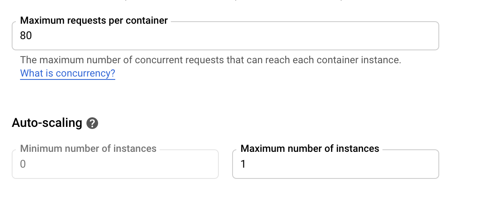

vignettes/usecase-shiny-cloudrun.Rmd
usecase-shiny-cloudrun.RmdDue to Shiny’s stateful nature, Cloud Run is not a perfect fit for Shiny but it can be configured to run Shiny apps that scale to 0 (e.g. no cost) up to 80 connections at once to one instance. The one instance is necessary to avoid requests being sent to another Shiny container instance and losing the user session. Shiny also needs to have certain websocket features disabled.
This means you can’t scale to a billion like other Cloud Run apps, and need to keep an eye on the load of the Shiny app (which will depend on your code) to see if 80 connections are too much for the CPU and Memory you assign to the Cloud Run instance. However this should still be a good fit for a lot of data science applications.

A minimal working example has been created by @randy3k here: https://github.com/randy3k/shiny-cloudrun-demo which can be deployed to Cloud Run via a fork here:
library(googleCloudRunner)
# a repo with the Dockerfile template
repo <- cr_buildtrigger_repo("MarkEdmondson1234/shiny-cloudrun-demo")
# deploy a cloud build trigger so each commit build the image
cr_deploy_docker_trigger(
repo,
image = "shiny-cloudrun"
)
# deploy to Cloud Run
cr_run(sprintf("gcr.io/%s/shiny-cloudrun:latest",cr_project_get()),
name = "shiny-cloudrun",
concurrency = 80,
max_instances = 1)If you need to change the memory for the one instance, you can use
cpu and memory arguments in the
cr_buildstep_run() and subsequent functions such as
cr_run(). The maximum allowed is 2 CPUs and 2 gibibytes
(2Gi):
# deploy to Cloud Run with 2GBs of RAM per instance and 2 CPUs
cr_run(sprintf("gcr.io/%s/shiny-cloudrun:latest",cr_project_get()),
name = "shiny-cloudrun",
concurrency = 80,
max_instances = 1,
cpu = 2,
memory = "2Gi")Or if you have a local Shiny app in shiny_cloudrun/ with
the appropriate Dockerfile and Shiny configuration, the full Docker
build and deployment pipeline can be carried out with:
# deploy the app version from this folder
cr_deploy_run("shiny_cloudrun/",
remote = "shiny-cloudrun2",
tag = c("latest","$BUILD_ID"),
max_instances = 1, # required for shiny
concurrency = 80)